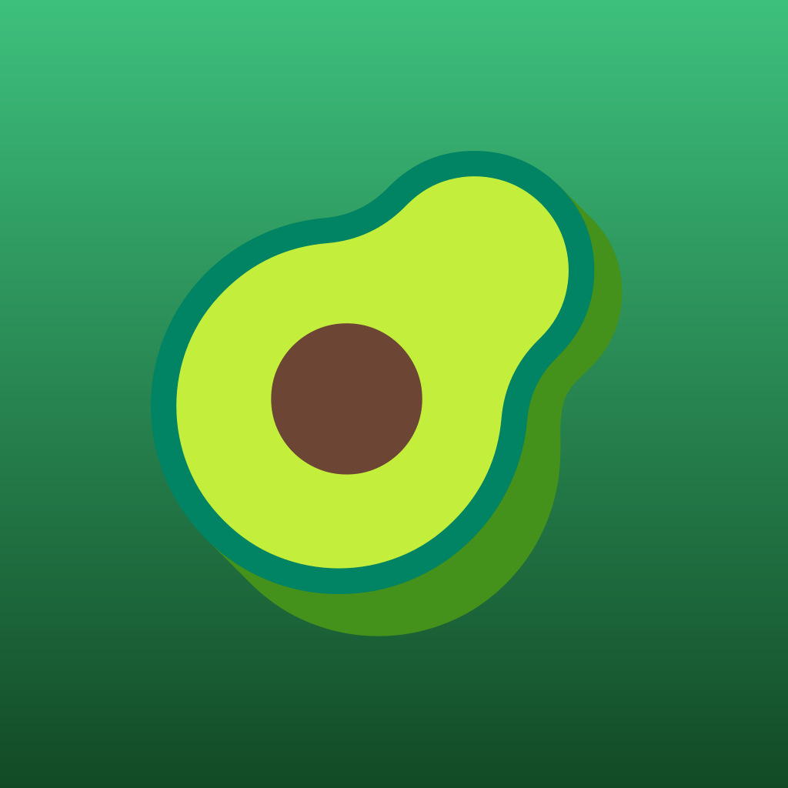

AvoScan AI
Detecta Mancha Negra y Roña en tu cultivo de aguacate con la cámara del celular.
Descargar AvoScan AI
Instalación directa · APK para Android
Al instalar verás un aviso
- Abre el archivo descargado.
- Android dirá que no puede instalar apps de origen desconocido.
- Toca Configuración y activa Permitir de esta fuente.
- Vuelve atrás y toca Instalar.
Sobre el asistente de IA
La detección de enfermedades funciona de una y sin internet. El asistente conversacional descarga su modelo (~500 MB) la primera vez que lo abres: conéctate a WiFi para eso.
Por ahora solo para Android
AvoScan AI todavía no está disponible para iPhone. Puedes ver de qué se trata y cómo funciona en la página del proyecto.
- Diagnóstico en segundos, directo desde una foto de la hoja o el fruto.
- Funciona sin señal: la IA corre dentro de tu celular, no en la nube.
- Recomendaciones de tratamiento para cada enfermedad detectada.
- Historial y estadísticas de tu huerto, guardados en el dispositivo.